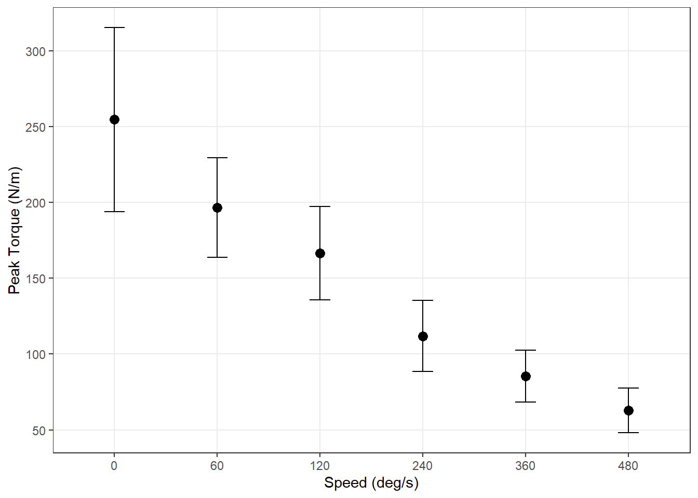
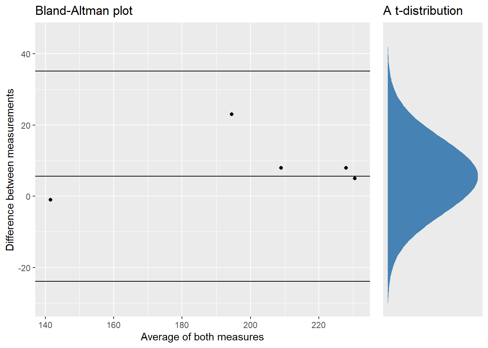

| Protocol |
Peak Torque (N/m) |
Time To Peak Torque (seconds) |
||||||
|---|---|---|---|---|---|---|---|---|
| Mean | Min | Max | SD | Mean | Min | Max | SD | |
| 60 (deg/s) | 196.6 | 136.0 | 228.0 | 32.9 | 0.61 | 0.44 | 0.70 | 0.08 |
| 120 (deg/s) | 166.5 | 111.0 | 197.0 | 30.7 | 0.42 | 0.29 | 0.70 | 0.10 |
| 240 (deg/s) | 111.8 | 69.0 | 140.0 | 23.5 | 0.25 | 0.22 | 0.30 | 0.02 |
| 360 (deg/s) | 85.4 | 58.0 | 114.0 | 17.1 | 0.31 | 0.17 | 1.04 | 0.28 |
| 480 (deg/s) | 62.8 | 41.0 | 83.0 | 14.8 | 0.23 | 0.18 | 0.56 | 0.12 |
| Isometric (60 deg) | 254.6 | 171.0 | 336.0 | 60.6 | 2.04 | 1.01 | 4.03 | 0.92 |
Reliability of knee-extension tests
Testprotokoll
Deltakeren (Breil et al. 2010) starter med 7 min oppvarming på sykkel med 4 minutter på BORG - 11, 2 min på BORG - 13 og 1 min BORG - 15. Testen gjøres unilateralt og starter med høgre ben. Deltakeren utfører isokinetisk kneeksentsjon på hastighetene, 60, 120, 240, 360 og 480 grader/sek og avslutter med en isometrisk ekstensjon på en vinkel på 60 grader. Deltakeren har tre forsøk på isokinetiske tester og to forsøk på isometrisk hvor den beste gjennomføringen blir gjeldende. Etter gjennomføring blir testen gjentatt på venstre bein.
Standardisering
Før test
Deltakere skal ha tilnærmet likt kosthold, søvn og aktivitetsnivå 24 timer før test. Det skal ikke inntas koffein eller nikotin på testdag. Setet blir stilt inn før første test og de samme innstillingene blir brukt på andre test. Deltaker skal sitte inntil ryggstøtten og med plass til to fingre mellom mellom knehasen og setet på stolen. Rotasjonsaksen i kneleddet skal være parallelt til dreieaksen i dynamometeret. Motstandsarmen blir festet på testbenet ovenfor malleolus. På testbenet blir låret festet med belte og et belte over magen for å forhindre uønskede bevegelser.
Under test
Deltaker får muntlig tilbakemeldinger under gjennomføring.
Reslutater
Table 1 viser deskriptive data fra testprotokollene ved pretest. Vi ser at det maksimale dreiemomentet og tiden til det maksiamle dreiemomentet avtar med økende hastighet på bevegelsen. Dette stemmer godt overens med sammenhengen mellom kraft og hatighet i Hills-kurve, Figure 1 viser forholdet mellom maksimalt dreiemoment og hastighet i vårt datasett.

reliabiliteten til maksimalt dreiemoment og tid til maksimalt dreiemoment over de ulike hastighetene kan sees i Table 2. Den typiske feilen viser hva standardavviket til et individs repeterte målinger er i absolutte tall og variasjonskoeffesienten viser den typiske feilen i prosent av gjennomsnittet. Den typiske feilen ser ut til være ganske lik over de ulike isokinetiske hastighetene, men større på isometrisk ved 60 graders vinkel i kneleddet. Tid til maksimalt dreiemoment ser ut til å følge det samme mønstret. Dette kan skyldes at det ble produsert høyere maksimalt dreiemoment på isometrisk kneekstensjon, se Figure 1, men også at den isometriske kneekstensjonen ble gjennomført i etterkant av det isokinetiske kneekstensjoner med stigenede hastighet. Dette kan tenkes å føre til større varisjoner i prestasjon ettersom tretthet i muskulaturen kan være til stede og at arbeidsoppgaven endres dratisk. Variasjonskoeffesienten viser at reliabiliteten til maksimalt dreiemoment er mye bedre enn reliabiliteten til tid il maksimalt dreiemoment. Interessant er det at det ser ut til at det finnes en positiv sammenheng mellom variasjonskoeffesient og økende hastighet på isokinetiske løft. Dette indikerer at reliabiliteten er best ved tregere hastigheter. “Limits of agreement” viser til avstanden (to standardavvik) som observasjoner kan variere rundt gjennomsnittet i absolutte tall.
| Protocol |
Peak Torque (N/m) |
Time To Peak Torque (seconds) |
||||||
|---|---|---|---|---|---|---|---|---|
| M | TE | CV | LoA | M | TE | CV | LoA | |
| 60 (deg/s) | 199.4 | 7.5 | 3.8 | 29.5 | 0.61 | 0.06 | 9.63 | 0.23 |
| 120 (deg/s) | 165.5 | 9.1 | 5.5 | 35.7 | 0.41 | 0.11 | 26.12 | 0.42 |
| 240 (deg/s) | 114.2 | 7.6 | 6.7 | 29.8 | 0.27 | 0.06 | 23.38 | 0.25 |
| 360 (deg/s) | 87.3 | 6.8 | 7.8 | 26.8 | 0.25 | 0.21 | 82.71 | 0.81 |
| 480 (deg/s) | 64.0 | 4.9 | 7.7 | 19.4 | 0.22 | 0.02 | 8.96 | 0.08 |
| Isometric (60 deg) | 263.9 | 28.7 | 10.9 | 112.8 | 2.05 | 0.71 | 34.76 | 2.80 |
| Abbriviations: M, mean; TE, typical error; CV, coefficient of variations; LoA, limits of agreement | ||||||||
Figure 2 viser en Bland-Altman graf for maksimalt dreiemoment ved en hastighet på 60 grader per sekund med tilsvarende t-distribusjon for “error”.

References
Breil, Fabio A., Simone N. Weber, Stefan Koller, Hans Hoppeler, and Michael Vogt. 2010. “Block Training Periodization in Alpine Skiing: Effects of 11-Day HIT on VO2max and Performance.” European Journal of Applied Physiology 109 (6): 1077–86. https://doi.org/10.1007/s00421-010-1455-1.